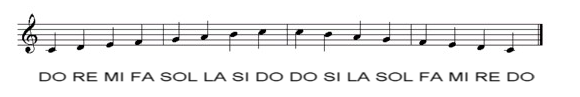

TEORÍA BÁSICA DE ESCALAS
Introducción
En un sentido general, se llama escala musical a la sucesión ordenada consecutivamente de todas las notas de un entorno sonoro particular (sea tonal o no); de manera simple y esquemática —según la notación musical convencional pentagramada—, estos sonidos están dispuestos de forma ascendente (de grave a agudo) aunque complementariamente también de forma descendente, uno a uno en posiciones específicas dentro de la escala, llamadas grados.
{kind=link}
Generalidades
La cantidad (grados) y calidad (alturas) de los sonidos seleccionados discriminativamente del total del universo acústico para definir un ámbito sonoro particular determina la existencia de numerosos tipos de escalas musicales; cada uno de los cuales detalla un ordenamiento específico de un conjunto discreto de sonidos, cuyas diferentes alturas están relacionadas entre sí sistemáticamente (según un modelo de afinación), proporcionando una medida de las distancias entre los sonidos (intervalos) que la componen y las relaciones que los definen. Aunque varias escalas pueden tener la misma representación, su afinación e intervalos pueden ser diferentes y por lo tanto, sonar distintas.
La utilidad práctica de la escala musical es fundamentalmente didáctica, y permite sintetizar la composición particular de un sistema musical, como también exponer de manera simplificada, esquemática y conveniente el material melódico y/o armónico del que está compuesta, en parte o en totalidad, una obra musical sometida a estudio. No debe confundirse el concepto de escala musical (sonidos ordenados por grados) con el de tonalidad (característica tonal de una obra musical centrada en un sonido particular), o el de modo (manera de distribuir los intervalos).
Existen muchas escalas musicales, tantas como ámbitos sonoros se deseen considerar; surgidas en diferentes épocas y regiones del mundo, según las distintas formas culturales. Su clasificación es variada, generalmente el criterio básico para categorizar cada escala musical esta dado por el número de sus sonidos componentes (escalas pentatónicas, hexatónicas, heptatónicas, etc.), y/o los intervalos existentes entre ellos (escalas diatónicas, cromáticas, mayores, menores, artificiales, etc.).
Construcción de Acordes
Como he comentado anteriormente un acorde (por lo general), está formado por una combinación de 3 notas diferentes, vamos a ver como se eligen esas notas, su nombre, significado, etc.
La primera nota que debemos coger es la que le da el nombre al acorde y a la que vamos a llamar tónica, por ejemplo Do.
La segunda nota que compone el acorde es la llamada 3ª o modal, esta nota es la que determina si el acorde es mayor o menor y se obtiene contando a partir de la primera nota o tónica, según la escala musical, y sería aquella que se corresponde con la 3ª nota. Como estamos construyendo el acorde de Do, la tercera nota desde Do es Mi.
La tercera nota que compone el acorde es la llamada 5ª o dominante, y al igual que la 3ª se obtiene contando de forma ascendente a partir de la tónica, en el caso de Do la 5ª sería Sol.
Según esto ya hemos obtenido las notas que componen el acorde de Do, que son: Do, Mi y Sol. De la misma forma se obtienen todos los acordes, vamos a hacer otro ejemplo para hallar el acorde de Fa:
Fa Sol La Si Do Re
Contamos a partir de Fa que es el acorde que queremos construir, por lo tanto Fa sería la primera nota (tónica), contando desde Fa la tercera nota es La por lo tanto esta sería la segunda nota que compone el acorde de Fa. Y por último la quinta de Fa es Do, con lo cual el acorde de Fa estaría formado por las notas: Fa, La y Do.